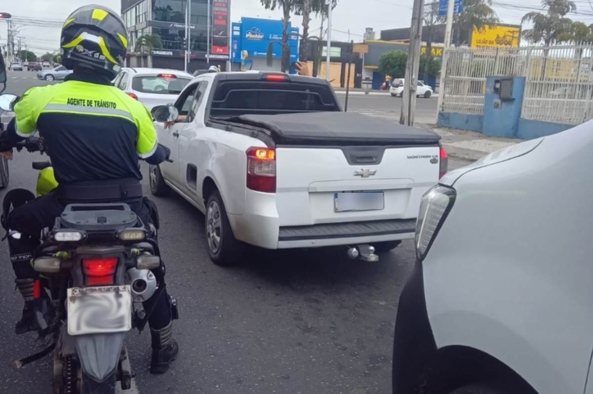

TV Davi® Notícias de Feira de Santana e Região
TV Davi® Notícias de Feira de Santana e Região

O motorista foi flagrado nas imediações do Centro de Abastecimento na direção de um carro com a placa parcialmente coberta.
Com o homem, os policiais apreenderam um revólver calibre 38 da marca Taurus, com munições deflagradas e intactas.
O percurso da motociata teve início na Avenida Presidente Dutra, passando por vias como a Avenida JJ Seabra, José Falcão e a rotatória da Cidade Nova.

Durante a ação policiais apreenderam 24 motocicletas com sinais de identificação adulterados.

Policiais constataram que o condutor não possuía Carteira Nacional de Habilitação (CNH) e a motocicleta estava com os pneus em estado de desgaste.
Vítima está internada em estado grave no Hospital Clériston Andrade, em Feira de Santana.

Evento será realizado no sábado (11), das 9h às 13h.
Ocorrência foi identificada após denúncias de moradores e pescadores da região, que notaram a presença de peixes mortos às margens do rio.
Na abordagem, foram encontrados em sua posse aproximadamente 600 pedras de crack e uma pistola calibre .40.
Alterações atingem o acesso aos bairros 35 BI, Aviário e Conjunto Feira VII a partir de quinta-feira (2).